BLAS¶
The Basic Linear Algebra Subprograms (BLAS) are heavily exploited within Elemental in order to achieve high performance whenever possible. Since the official BLAS interface uses different routine names for different datatypes, the following interfaces are built directly on top of the datatype-specific versions.
The prototypes can be found in include/elemental/imports/blas.hpp, while the implementations are in src/imports/blas.cpp.
Level 1¶
- void blas::Axpy(int n, T alpha, const T* x, int incx, T* y, int incy)¶
Performs 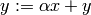 for vectors 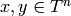 and scalar 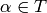. x and y must be stored such that 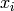 occurs at x[i*incx] (and likewise for y).
- T blas::Dot(int n, const T* x, int incx, T* y, int incy)¶
Returns 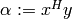, where x and y are stored in the same manner as in blas::Axpy.
- T blas::Dotc(int n, const T* x, int incx, T* y, int incy)¶
Equivalent to blas::Dot, but this name is kept for historical purposes (the BLAS provide ?dotc and ?dotu for complex datatypes).
- T blas::Dotu(int n, const T* x, int incx, T* y, int incy)¶
Similar to blas::Dot, but this routine instead returns 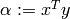 (x is not conjugated).
- Base<T>::type blas::Nrm2(int n, const T* x, int incx)¶
Return the Euclidean two-norm of the vector x, where 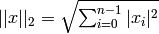. Note that if T represents a complex field, then the return type is the underlying real field (e.g., T=Complex<double> results in a return type of double), otherwise T equals the return type.
- void blas::Scal(int n, T alpha, T* x, int incx)¶
Performs 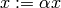, where
 is stored in the
manner described in blas::Axpy, and .
is stored in the
manner described in blas::Axpy, and .
Level 2¶
- void blas::Gemv(char trans, int m, int n, T alpha, const T* A, int lda, const T* x, int incx, T beta, T* y, int incy)¶
Updates 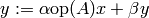, where 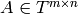 and 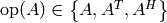 is chosen by choosing trans from 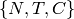, respectively. Note that x is stored in the manner repeatedly described in the Level 1 routines, e.g., blas::Axpy, but A is stored such that
 is located
at A[i+j*lda].
is located
at A[i+j*lda].
- void blas::Ger(int m, int n, T alpha, const T* x, int incx, const T* y, int incy, T* A, int lda)¶
Updates 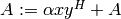, where and x, y, and A are stored in the manner described in blas::Gemv.
- void blas::Gerc(int m, int n, T alpha, const T* x, int incx, const T* y, int incy, T* A, int lda)¶
Equivalent to blas::Ger, but the name is provided for historical reasons (the BLAS provides ?gerc and ?geru for complex datatypes).
- void blas::Geru(int m, int n, T alpha, const T* x, int incx, const T* y, int incy, T* A, int lda)¶
Same as blas::Ger, but instead perform 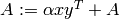 (y is not conjugated).
- void blas::Hemv(char uplo, int m, T alpha, const T* A, int lda, const T* x, int incx, T beta, T* y, int incy)¶
Performs 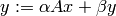, where is assumed to be Hermitian with the data stored in either the lower or upper triangle of A (depending upon whether uplo is equal to ‘L’ or ‘U’, respectively).
- void blas::Her(char uplo, int m, T alpha, const T* x, int incx, T* A, int lda)¶
Performs 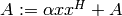, where 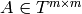 is assumed to be Hermitian, with the data stored in the triangle specified by uplo (depending upon whether uplo is equal to ‘L’ or ‘U’, respectively).
- void blas::Her2(char uplo, int m, T alpha, const T* x, int incx, const T* y, int incy, T* A, int lda)¶
Performs 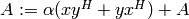, where is assumed to be Hermitian, with the data stored in the triangle specified by uplo (depending upon whether uplo is equal to ‘L’ or ‘U’, respectively).
- void blas::Symv(char uplo, int m, T alpha, const T* A, int lda, const T* x, int incx, T beta, T* y, int incy)¶
The same as blas::Hemv, but is instead assumed to be symmetric, and the update is .
Note
The single and double precision complex interfaces, csymv and zsymv, are technically a part of LAPACK and not BLAS.
- void blas::Syr(char uplo, int m, T alpha, const T* x, int incx, T* A, int lda)¶
The same as blas::Her, but is instead assumed to be symmetric, and the update is 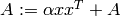.
Note
The single and double precision complex interfaces, csyr and zsyr, are technically a part of LAPACK and not BLAS.
- void blas::Syr2(char uplo, int m, T alpha, const T* x, int incx, const T* y, int incy, T* A, int lda)¶
The same as blas::Her2, but is instead assumed to be symmetric, and the update is 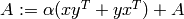.
Note
The single and double precision complex interfaces do not exist in BLAS or LAPACK, so Elemental instead calls csyr2k or zsyr2k with k=1. This is likely far from optimal, though Syr2 is not used very commonly in Elemental.
- void blas::Trmv(char uplo, char trans, char diag, int m, const T* A, int lda, T* x, int incx)¶
Perform the update 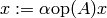, where is assumed to be either lower or upper triangular (depending on whether uplo is ‘L’ or ‘U’), unit diagonal if diag equals ‘U’, and is determined by trans being chosen as ‘N’, ‘T’, or ‘C’, respectively.
- void blas::Trsv(char uplo, char trans, char diag, int m, const T* A, int lda, T* x, int incx)¶
Perform the update 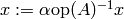, where is assumed to be either lower or upper triangular (depending on whether uplo is ‘L’ or ‘U’), unit diagonal if diag equals ‘U’, and is determined by trans being chosen as ‘N’, ‘T’, or ‘C’, respectively.
Level 3¶
- void blas::Gemm(char transA, char transB, int m, int n, int k, T alpha, const T* A, int lda, const T* B, int ldb, T beta, T* C, int ldc)¶
Perform the update 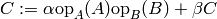, where 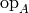 and 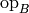 are each determined (according to transA and transB) in the manner described for blas::Trmv; it is required that
 and that
the inner dimension of 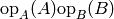 is k.
and that
the inner dimension of 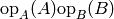 is k.
- void blas::Hemm(char side, char uplo, int m, int n, T alpha, const T* A, int lda, const T* B, int ldb, T beta, T* C, int ldc)¶
Perform either 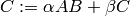 or 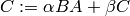 (depending upon whether side is respectively ‘L’ or ‘R’) where
 is assumed to be Hermitian with its data stored in either the
lower or upper triangle (depending upon whether uplo is set to ‘L’ or
‘U’, respectively) and .
is assumed to be Hermitian with its data stored in either the
lower or upper triangle (depending upon whether uplo is set to ‘L’ or
‘U’, respectively) and .
- void blas::Her2k(char uplo, char trans, int n, int k, T alpha, const T* A, int lda, const T* B, int ldb, T beta, T* C, int ldc)¶
Perform either 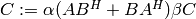 or 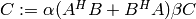 (depending upon whether trans is respectively ‘N’ or ‘C’), where 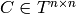 is assumed to be Hermitian, with the data stored in the triangle specified by uplo (see blas::Hemv) and the inner dimension of 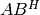 or 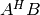 is equal to k.
- void blas::Herk(char uplo, char trans, int n, int k, T alpha, const T* A, int lda, T beta, T* C, int ldc)¶
Perform either 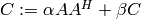 or 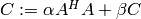 (depending upon whether trans is respectively ‘N’ or ‘C’), where is assumed to be Hermitian with the data stored in the triangle specified by uplo (see blas::Hemv) and the inner dimension of 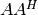 or 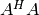 equal to k.
- void blas::Hetrmm(char uplo, int n, T* A, int lda)¶
Form either 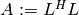 or 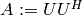, depending upon the choice of uplo: if uplo equals ‘L’, then 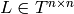 is equal to the lower triangle of A, otherwise
 is read from
the upper triangle of A. In both cases, the relevant triangle of A
is overwritten in order to store the Hermitian product.
is read from
the upper triangle of A. In both cases, the relevant triangle of A
is overwritten in order to store the Hermitian product.Note
This routine is built on top of the LAPACK routines slauum, dlauum, clauum, and zlauum; it in the BLAS section since its functionality is extremely BLAS-like.
- void blas::Symm(char side, char uplo, int m, int n, T alpha, const T* A, int lda, const T* B, int ldb, T beta, T* C, int ldc)¶
Perform either or (depending upon whether side is respectively ‘L’ or ‘R’) where
is assumed to be symmetric with its data stored in either the
lower or upper triangle (depending upon whether uplo is set to ‘L’ or
‘U’, respectively) and .
- void blas::Syr2k(char uplo, char trans, int n, int k, T alpha, const T* A, int lda, const T* B, int ldb, T beta, T* C, int ldc)¶
Perform either 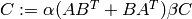 or 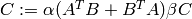 (depending upon whether trans is respectively ‘N’ or ‘T’), where is assumed to be symmetric, with the data stored in the triangle specified by uplo (see blas::Symv) and the inner dimension of 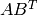 or 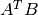 is equal to k.
- void blas::Syrk(char uplo, char trans, int n, int k, T alpha, const T* A, int lda, T beta, T* C, int ldc)¶
Perform either 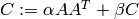 or 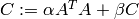 (depending upon whether trans is respectively ‘N’ or ‘T’), where is assumed to be symmetric with the data stored in the triangle specified by uplo (see blas::Symv) and the inner dimension of 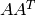 or 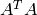 equal to k.
- void blas::Trmm(char side, char uplo, char trans, char unit, int m, int n, T alpha, const T* A, int lda, T* B, int ldb)¶
Performs 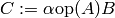 or 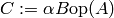, depending upon whether side was chosen as ‘L’ or ‘R’, respectively. Whether
is treated as lower
or upper triangular is determined by whether uplo is ‘L’ or ‘U’ (setting
unit equal to ‘U’ treats as unit diagonal, otherwise it should
be set to ‘N’). is determined in the same manner as in
blas::Trmv.
- void blas::Trsm(char side, char uplo, char trans, char unit, int m, int n, T alpha, const T* A, int lda, T* B, int ldb)¶
Performs or , depending upon whether side was chosen as ‘L’ or ‘R’, respectively. Whether
is treated as lower
or upper triangular is determined by whether uplo is ‘L’ or ‘U’ (setting
unit equal to ‘U’ treats as unit diagonal, otherwise it should
be set to ‘N’). is determined in the same manner as in
blas::Trmv.